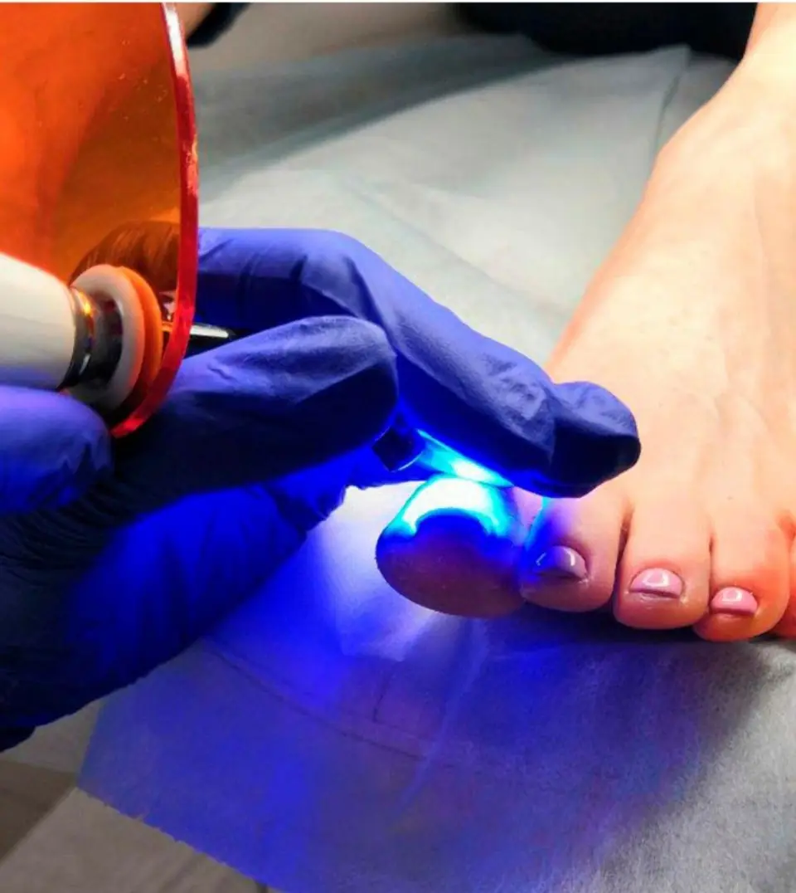
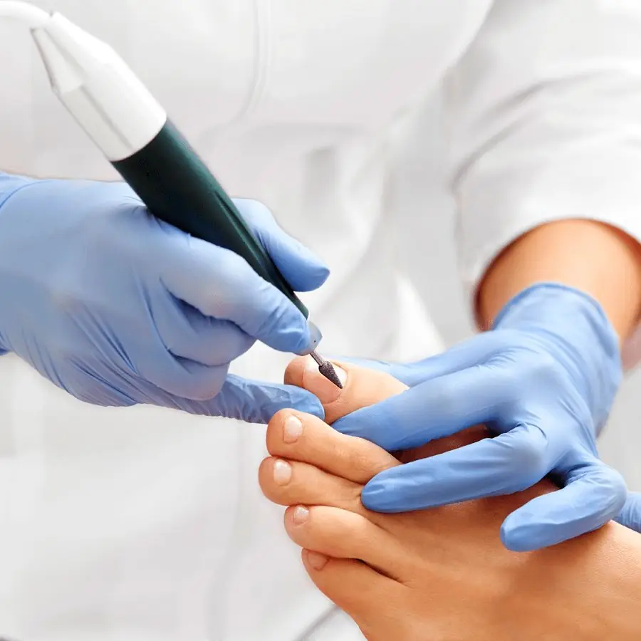
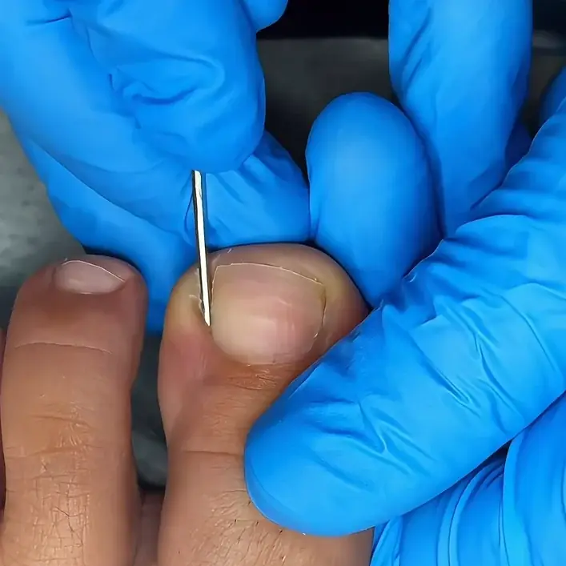
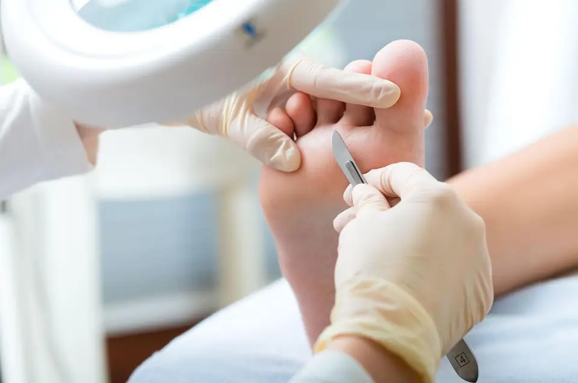

Atención Particular de Podología a Domicilio en Santa Marta
Atención inmediata,
sin filas y sin
trámites de EPS
Olvídate de las esperas eternas, en Pedi-Spa te atendemos rápido, así que escríbenos hoy y separa tu valoración con un podólogo titulado que llega hasta tu casa en Santa Marta, con un servicio particular a domicilio ágil y del más alto nivel profesional.

Lo que realmente importa cuando buscas podólogo
Las opciones no son todas iguales, y aquí te contamos qué nos hace diferentes de las demás.
| Criterio | Otras opciones | Pedi-Spa |
|---|---|---|
| Tiempo de espera para cita | Semanas o meses | Esta semana |
| ¿Requiere EPS o remisión? | Sí | No |
| Atención a domicilio | Limitada o no disponible | Consultorio y domicilio en Santa Marta |
| Podólogo certificado | Variable | Siempre |
| Instrumental esterilizado | Variable | Protocolo completo |
| Contacto directo por WhatsApp | No siempre disponible | Respuesta rápida |
| Seguimiento post-tratamiento | No incluido | Incluido |

Cuatro razones para elegir Pedi-Spa
Atención inmediata
Sin esperas eternas, en Pedi-Spa buscamos asignarte la cita disponible más cercana, así que escríbenos hoy y en pocos minutos te confirmamos el horario.
Profesionales certificados
Nuestro equipo está formado por podólogos titulados, especializados en las afecciones del pie, y no por auxiliares clínicos ni por técnicos de estética de uñas.
Consultorio y domicilio
Te esperamos en el consultorio de la Carrera 17 #24A-40 y, si prefieres no desplazarte, vamos hasta donde estés, porque también atendemos a domicilio en toda Santa Marta con la misma calidad y bioseguridad que tendrías en una consulta clínica.
Bioseguridad total
En cada cita usamos instrumental clínico esterilizado en autoclave, materiales desechables y protocolos de bioseguridad certificados, porque cuidar tu salud no admite atajos.

Nuestros servicios y tarifas
Te atendemos de forma particular y con tarifas claras desde el principio, así que antes de reservar sabrás exactamente qué incluye cada procedimiento y cuál es su valor.

¿Tienes preguntas o quieres que te orientemos antes de tomar una decisión? Escríbenos sin compromiso →
Un podólogo que te escucha
y da resultados reales
Muchos de nuestros pacientes llegan después de pasar por atenciones que los dejaron inconformes, y por eso trabajamos para que, después de esta visita, ya no tengas que salir a buscar otro podólogo.
Primera consulta orientativa sin compromiso — escríbenos por WhatsApp contándonos qué te pasa y te diremos si tu caso entra en nuestras especialidades antes de que separes la cita.
Diagnóstico en la primera visita — en la mayoría de los casos te valoramos y arrancamos con el procedimiento durante esa misma cita.
Plan de tratamiento claro — cuando salgas de la consulta tendrás claro tu diagnóstico, los procedimientos que vamos a realizar y cómo será tu recuperación.
Seguimiento real post-consulta — mientras te recuperas seguimos pendientes por WhatsApp para resolver tus dudas, y eso no tiene ningún costo adicional.

Preguntas más habituales
¿Realmente puedo agendar sin pasar por una EPS?
¿Cuánto cuesta una consulta particular con podólogo?
¿Hacen visitas a domicilio en Santa Marta?
¿Cuánto se demora una sesión podológica?
¿Qué pasa si tengo diabetes o problemas de circulación?
Tu primera consulta orientativa
está a un mensaje de WhatsApp
Cuéntanos qué te está pasando y te confirmamos si tu caso hace parte de nuestras especialidades antes de que agendes la cita.
Vamos hasta tu casa en Santa Marta
Te atendemos en el consultorio o vamos hasta tu casa
Te atendemos en el consultorio de la Carrera 17 #24A-40 y también a domicilio, y en ese caso el podólogo lleva hasta tu casa el instrumental esterilizado y todo lo que hace falta.
- Centro
- El Rodadero
- Bello Horizonte
- Mamatoco
- Gaira
- Otros sectores
Podología a domicilio
Pedi-Spa
Forma de atención
Consultorio en la Carrera 17 #24A-40 y domicilioToda Santa Marta
Horarios para tu cita
Lunes a Domingo8:00 AM – 6:00 PM
Reserva ahora
+57 315 583 2882